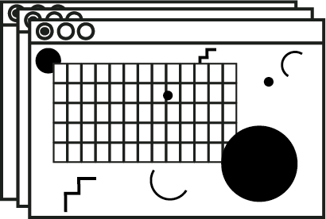

Changes
p.31-37
A vida na fronteira da rede computacional
Likely to change our lives more than any technology since the automobile
by Art Kleiner
“When I log in I ‘go’ into the network. I’m not here in my room any more. Ask my family. I’m in another place. In formal geographic terms, I’m inside a single point. Yet inside that point is all the space I need to meet with other people plus my files, my records, and my entire office. And the behavior in there is what you might expect from people who have been wrenched into a fourth dimension.” -Einar Steffenid, consultant for the U.S. Army, the Federal Communications Commission and other groups in Washington, D.C, who does much of his work via a computer terminal in his Huntington Beach, California, home.
Computer Networks are the new telecommunications media for transmitting words and pictures. They’re used to send messages, pass on news and gossip, search vast indexed files, manage multinational businesses, bring together faraway compatriots, and take part in interactive fantasy games. They’re being promoted hard by an army of international dreamers and at least 20 major corporations. They seem likely to change our lives more than any technology since the automobile.
“If your prime minister were here,” writer James Martin told an Australian television audience:
“I’d say, Mr. Fraser, you’re building freeways all over. An absolutely superlative communications system would cost as much as 100 miles of freeway in all. People could move out of cities and back to villages, because they would get their work, their quality education, and their culture through the terminals. The cities would remain, but only the people who really wanted to be there would have to stay.”
The technology which makes this possible is a sort of hybrid of computers, inexpensive digital transmission links, and telephones. The preferred vehicle is the computer terminal, a typewriter keyboard with a video display screen attached and some provision for plugging in a telephone. Sometimes computer terminals print on paper instead of displaying characters on a screen. Networks vary in how they look and what you can do with them, but the procedure for logging into all of them is roughly the same. You dial a telephone number, plug the telephone receiver into your terminal, wait for your terminal to recognize the high-pitched tones coming out of the phone, and then type in the correct codes:
1. A code for the address of the particular network you wish to enter (if you’re entering a network across the country, you use high-speed data transmission Unes, whose rates are much cheaper than dialing direct-$3 to $10 for each hour connected. If you’re dialing a local network, you don’t need an address code).
2. Your identification number, by which the network will recognize you from any terminal and telephone in the world.
3. Your secret password, so no one else can enter under your l.D.
Then the network welcomes you, asks if you wish to see the messages waiting for you, and delivers any other relevant news. From there, you type in the commands which tell the network what you want to do: send a message, play a game, scan an electronic news wire for stories about a particular subject, leave an item on a computerized bulletin board or conference, edit a paper, find out who else is on-hne at that moment, zip off a few quick one-line comments to them, do all of the above at once, or simply sign off.
Computer networks will be used for you to start keeping in touch with people. Far away colleagues coordinate long-range projects, people with similar interests substitute computer networks for newsletters or telephone trees (and end up keeping in touch more personally as a result), and soul-searching friendships develop between those who have never met in person. Some members log on to get a sympathetic response in an emotional crisis. Others make long distance trips to meet in person those they’ve only seen on the network. There have been typed flirtations which developed into fullfledged romances and idle dreams which suddenly became high-commitment businesses.
There are, of course, other potentials which network designers have only begun to explore. There’s shopping via the terminal, voting through it, personalized news on tap, new town-meeting-type promise for pubUc participa- tion in local politics — and also real possibilities for invasion of privacy and monitoring-from-on-high.
The companies with big financial stakes in networks are among the biggest in the world - Exxon, Xerox, Amercan Telephone and Telegraph, International Business Machines, General Telephone and Electronics, Warner Communications, American Express. And there’s an equally determined grassroots movement, with many small bulletin board networks already established on personal computers, whose members believe this willgive individuals more power over their lives than any other technology. A movement is growing for com- munity information centers, which would link neighborhoods for better barter and politics.
Ultimately, it’s likely that many of the details of civilization - directory assistance, letters and mail order, travel information - will be handled by networks, and people will belong to five or six networks each- local and nationwide - depending on their needs. The possibility that people who can’t or won’t participate in networks may be shut out of work or other opportuni- ties is a very real one. Hopefully, libraries and public access centers will acquire terminals so people who want to can use networks even if they can’t afford a terminal.
There are probably about 50,000 computer network members now. They range in age from 14 to 90. Many are professional computer programmers, but a fair number never saw a terminal until they joined the net- work. Many join to keep in touch with far-flung colleagues in scientific or professional fields. Nearly every- one finds it making great changes in their personal hves. Joining a network can be like moving into a new community. Addiction is common.
Turning off the terminal can be Uke waking up from a dream. Network members wonder about their compulsion, as in this late night message from programmer Jim Clark:
“I feel a sense of purpose and connectedness when on the system and even if I haven’t been on in a while (2 days) I miss using it. I have encountered an entire new world of good people. I find it more important than the tele- phone (which I never use), the TV (even less use), the radio Oots of use) and even (self-horror) the on-campus computers (constant use). Is the network addictive? Perhaps regulatory measures are necessary to keep people from becoming addicts and ruining (enhancing?) their lives. Or perhaps there are pre-addiction symptoms that the computer can look for. I don’t know. I only know that I have been awake on-line for twenty-five hours now and my last experiment died horribly. It is going to be a long night.”
As pessoas conseguem usar a rede sem se tornarem viciadas, mas não existe uma rede sem alguns viciados.
Elaine Kerr, who coaches new members of the EIES network, com- piled this list of symptoms: “Signing on at least several times a day (maybe something is waiting). Physically evident impatience when system is inaccessible. Inability to write off-line. Inability to think off-line. Lack of desire to conduct relationships off-line. Inability to sleep without signing on just one last time. Dreaming about the network.”
Users get impatient with ordinary typewriters which don’t backspace to correct errors or pick up the mail and with ordinary mail, which takes four days to ship a letter cross continent, and especially with the telephone, which often requires five tries before the person at the other end is reached. Since communication is easier, network members keep in touch with four or five times as many people as they would otherwise. Since the com- puter stores transcripts of what passes through it, net- work users don’t keep many paper files. Some people aren’t there physically, things like shyness, physical disabilities, race, religion, sex, and body language are invisible.
“I worked with someone here on line for some time and then had occasion to talk with him on the phone,” one user said. “The accent suggested he was black. I’d never had reason to think of it before that, and still could be wrong, but the possibility is now in my consciousness where it had not been before.”

People join in from their desk terminals, searching around the videoscreen-simulated universe for someone else who’s aheady playing and drawing them into cospaceship battle. On the Electronic Information Exchange System (EIES), there’s a collaborative soap opera - a short story in prog- ress, written under pen names, each member writing a segment in turn.
There’s a different quality to news and information when it’s pulled out of the system with commands that seek out specific interests. “Listening to the radio,” Hudson Institute staff member Douglas Cayne wrote last November, “I heard a one-line news bulletin saying that South Korean President Park Chung-Hee had been assassinated and his government overthrown. The evening paper had already been delivered, I don’t have a TV, so I turned to the UPI news wire on the Source network . . . I was able to monitor reports from Korea all last night and today, and feel much more secure about what actually happened. There’s nothing like being able to see that the story you are reading was written only minutes earlier...”
People’s reactions to networks depend most on the way they’re designed. Airline reservation and bank teller systems use the same technology as more sophisticated networks, but the clerks and bank tellers get frustrated because they can’t send messages or do anything but type in the same numbers by rote. A lot depends on how quickly the system responds. The best networks reply as fast as a person would in conversation. A slow system is as frustrating as driving a string of red lights. And a too fast system takes getting used to: “One company set up some clerks on a data base,” said psychologist Marilyn Albin, who advises business managers about designing networks for people.